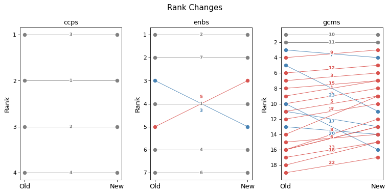
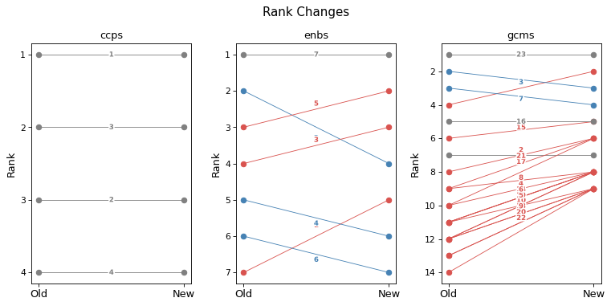
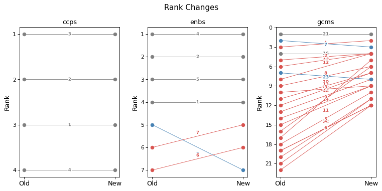
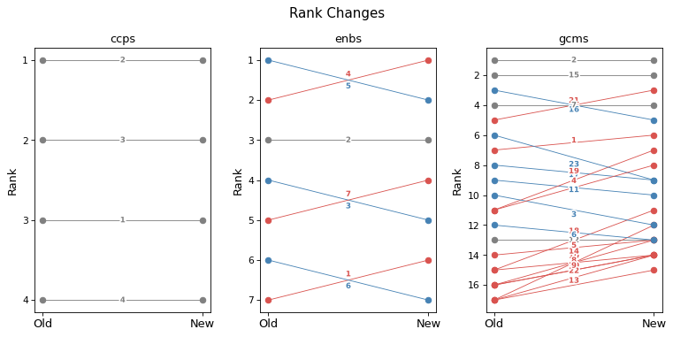
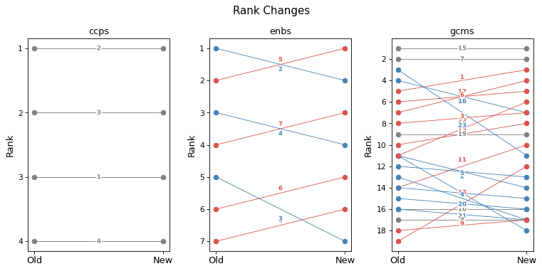
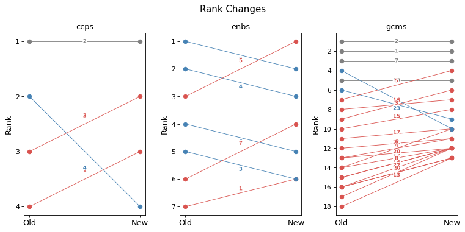

from iomeval.llm_eval.changes import *
from fastcore.all import *
from iomeval.readers import load_evals
from pathlib import PathChange Analysis
Click here to access the IOM TAGGING (BETA) PLATFORM
p = Path().home() / 'iomeval/data/requester_by_report_id.json'
lut = p.read_json()
evls_test = L(lut.keys())
ROOT_PATH = Path.home() / 'iomeval'
DATA_PATH = ROOT_PATH / 'data'
RESULTS_PATH = DATA_PATH/ 'results'
EVALS_PATH = ROOT_PATH / 'nbs/files/test/evaluations.json'
# Contains latest backed up data before new deployment
LATEST_TAG_PATH = Path.home() / 'tagapp/backups/20260311_115159/data'
evals = load_evals(EVALS_PATH)dfs = all_deltas(evls_test, RESULTS_PATH, LATEST_TAG_PATH)who = set(lut.values())
who{'Andres', 'Davide', 'elma', 'pip', 'rogers'}# Automatically generate changes report cells for all reports
rpts = [k for k,v in lut.items() if v=='Davide']
print(f'# of reports: {len(rpts)}')# of reports: 7for rpt in rpts: await gen_report_cells(rpt, dfs, LATEST_TAG_PATH, RESULTS_PATH)What we changed?
New prompts incorporating the following updates:
- GCM 23 downgrading: Added an important note on GCM Objective 23 clarifying its revised scoring treatment.
- SRF enablers reframing: Introduced a critical distinction between enablers as institutional capacity versus programmatic tools.
- Relevance score range relabelling: Tags now use “Not Relevant”, “Peripheral” (formerly “Supplementary”), “Relevant”, and “Fundamental”.
- Terminology warning on “Findings” — Analysts must not use “finding(s)” in their own analytical language, as this term carries a specific formal meaning in IOM evaluation reports. It may only be referenced when it appears in report excerpts themselves.
- Excerpt-based analysis clarification: Made explicit that only report excerpts are accessed (executive summary, introduction, summary, background, evaluation scope, conclusions, recommendations, lessons learnt), not full documents. Hedged language is required throughout (e.g., “the excerpts suggest…”, “based on the sections reviewed…”). The Findings section will be handled in a later iteration.
- GCM descriptions added: Each GCM objective now includes a short description before the list of actions so as to reflect exactly the GA resolution. For instance:
# Objective 1
## Title: Collect and utilize accurate and disaggregated data as a basis for evidence-based policies
We commit to strengthen the global evidence base on international migration by improving and investing in the collection, analysis and dissemination of accurate , ...
To realize this commitment, we will draw from the following actions:
## Associated actions
- a. Elaborate and implement ...
- b. ...
...- More rigorous section selection: Sections are now selected more carefully following a curation step.
Here are links to new and previous versions of the prompts.
How did these changes affect tagging?
Score changes overview
Based on 20 reports only for now.
GCM objectives
Note: You might be unfamiliar with this type of visualization. It’s called a violin plot. A violin plot combines a box plot with a smoothed estimate of the score distribution, making it easier to spot not just the median and spread, but also whether scores cluster around one or several values, something a box plot alone would miss.
plot_score_diffs(dfs, 'gcms', 'GCM objective', figsize=(12, 6), dpi=77)
SRF Enablers
plot_score_diffs(dfs, 'enbs', 'SRF Enablers', figsize=(8, 3), dpi=77)
SRF Cross-Cutting Priorities
plot_score_diffs(dfs, 'ccps', 'SRF Cross-Cutting Priorities', figsize=(8, 3), dpi=77)
Rank changes overview
Among all themes where previous relevance score was > 0.83 (FUNDAMENTAL), what percentage of them have undergone a change in rank (rank_diff != 0)
dfs[dfs.score_old > 0.83].groupby('mapping_type').apply(lambda x: 100 * (x.rank_diff != 0).sum() / len(x)).round(1).sort_values()mapping_type
ccps 16.7
gcms 34.3
outs 40.7
enbs 44.4
dtype: float64Tentative Intepretation
Here’s a tentative interpretation linking the observed changes to the prompt updates:
General downward shift in scores (GCMs and partly CCPs/Enablers) The broad negative drift across most GCM objectives likely reflects the combined effect of more rigorous section selection (#7) and explicit excerpt-based hedging (#5). With fewer but better-curated sections, the model has less text to draw relevance from, naturally producing more conservative scores.
GCM 23 - dramatic outlier The extreme downward shift for GCM 23 (median around −0.4 to −0.6, with tails reaching −0.8) is the clearest signal in the whole analysis, and directly traces to the GCM 23 downgrading rule (#1). This change is working as intended.
SRF Enablers — highest rank instability (44.4%) The enablers reframing (#2) — distinguishing institutional capacity from programmatic tools — appears to have significantly reshuffled rankings among top-scoring enablers, even when scores themselves didn’t move dramatically. This is the mapping type most affected by rank changes among “Fundamental” tags, suggesting the semantic reframing hit harder than the numeric shift alone.
GCM descriptions added (#6) The richer per-objective context may have sharpened discrimination between objectives, reducing spurious tagging and contributing to the general score compression downward.
CCPs — relatively stable ranks (16.7%) Cross-cutting priorities appear least disrupted overall, which is consistent with the fact that none of the 7 updates specifically targeted CCP scoring logic.
Caveat: This is based on 20 reports only — patterns, especially for less-tagged objectives, should be interpreted with caution until the full dataset is processed.
Per evaluation report
REMINDER, our “RELEVANCE SCORE FRAMEWORK” is as follows: - score >= 0.84: FUNDAMENTAL - 0.66 <= score < 0.83: RELEVANT - 0.34 <= score < 0.66: PERIPHERAL - score < 0.34: NOT RELEVANT
Final External Evaluation: Better Migration Management Programme Phase III
plot_rank_changes(dfs[dfs.evl_id == '4341695461234eee3deb51ac68871109'], figsize=(10, 5), dpi=77)
Fundamental Themes | | Mapping | Theme | Score | |—|—|—|—| | old | gcms | 10: Prevent, Combat And Eradicate Trafficking In Persons In The Context Of International Migration | 0.88 | | old | gcms | 11: Manage Borders In An Integrated, Secure And Coordinated Manner | 0.85 | | new | gcms | 10: Prevent, Combat And Eradicate Trafficking In Persons In The Context Of International Migration | 0.85 |
⬇️ No Longer Fundamental
GCMS 11: Manage borders in an integrated, secure and coordinated manner
| score_old | score_new | rank_old | rank_new | rank_diff |
|---|---|---|---|---|
| 0.85 | 0.82 | 2 | 2 | 0 |
Reasoning (old)
This report would likely be essential evidence for a synthesis on GCM Objective 11. Component 2 explicitly focuses on ‘strengthening the capacity of border authorities and immigration services’ and ‘integrated border governance.’ The report discusses MIDAS border management systems, Inter-Agency Border Management Committees (IBMCs) in Somalia, and cross-border cooperation mechanisms. Findings note that IOM ‘strengthened border management’ and ‘enhanced cross-border cooperation.’ The Ethiopia-Kenya study tour on border management is highlighted as a best practice. The conflict response in Sudan required shifting focus to border management in South Sudan. Key sections for review: Component 2 intervention logic, findings on border management capacity building, impact section on IBMCs and cross-border cooperation, Recommendation 6 on strengthening cross-border mechanisms. Directly relates to Actions 11a (international cooperation on border management), 11b (efficient border procedures), 11e (child protection at borders), and 11g (cross-border collaboration).Reasoning (new)
Based on the excerpts reviewed, this report would likely contribute substantial evidence to a synthesis on GCM Objective 11. Integrated border governance is explicitly Component 2 of the BMM programme, and the excerpts suggest the evaluation examines border management capacity-building, cross-border cooperation mechanisms, and training of border officials across multiple countries. The executive summary notes that IOM ‘met or exceeded most programme targets’ in ‘strengthening institutional capacities’ and ‘enhanced migration governance,’ with specific mention of Inter-Agency Border Management Committees (IBMCs) in Somalia as examples of improved operational coordination. The evaluation covers border management in Djibouti, Ethiopia, Kenya, Somalia, South Sudan, Sudan, and Uganda — providing multi-country evidence relevant to Objective 11’s actions on international cooperation (11a), integrated border management structures (11b), and cross-border collaboration (11g). Training of border officials is specifically mentioned as surpassing targets. Synthesis specialists would likely want to review the effectiveness sections on border governance outcomes, the findings on IBMC functionality, and the recommendations on cross-border cooperation mechanisms. The conflict in Sudan and its effects on border management in South Sudan also provides evidence on adaptive border management in fragile contexts.Evaluation of IOM Accountability to Affected Populations
plot_rank_changes(dfs[dfs.evl_id == '6c3c2cf3fa479112967612b0baddab72'], figsize=(10, 5), dpi=77)
Fundamental Themes | | Mapping | Theme | Score | |—|—|—|—| | old | ccps | 1: Integrity, Transparency and Accountability | 0.91 | | old | enbs | 7: Internal systems | 0.85 | | old | gcms | 23: Strengthen International Cooperation And Global Partnerships For Safe, Orderly And Regular Migration | 0.85 | | new | ccps | 1: Integrity, Transparency and Accountability | 0.85 |
⬇️ No Longer Fundamental
ENBS 7: Internal systems
| score_old | score_new | rank_old | rank_new | rank_diff |
|---|---|---|---|---|
| 0.85 | 0.82 | 1 | 1 | 0 |
Reasoning (old)
This report would likely be essential for a synthesis on internal systems and organizational infrastructure. The evaluation’s primary focus is assessing IOM’s AAP Framework—an institutional system comprising policy (IN/285), guidance, resources, and coordination mechanisms. Key findings directly address: the absence of a formal monitoring and evaluation framework; gaps in standard tools and procedures; lack of integration of AAP into the project cycle; the need for institutionalization of CFM systems into ‘corporate systems’; and data protection compliance challenges. The conclusions note that IOM lacks ‘a formal result matrix or a theory of change for AAP’ and relies on ‘a collection of indicators from different institutional monitoring frameworks.’ Recommendations 3, 7, and 8 specifically address developing monitoring frameworks, standardizing tools and templates, and integrating CFM systems into corporate infrastructure. For synthesis specialists examining IOM’s internal systems capacities, this report provides substantial evidence on how institutional frameworks are developed, implemented, and monitored. The analysis of system fragmentation, the discussion of policy-practice gaps, and the recommendations on standardization and integration would be particularly valuable. Pay close attention to the findings on monitoring frameworks, the analysis of CFM system fragmentation in findings, and Recommendations 2, 3, 7, and 8.Reasoning (new)
Based on the excerpts reviewed, this report would likely contribute meaningful evidence to a synthesis on Enabler 7 (Internal Systems), and appears to be one of the two most relevant Enablers for this report. The evaluation explicitly examines IOM’s institutional systems and organizational infrastructure for AAP — including the adequacy of the AAP policy framework (IN/285), the monitoring and evaluation architecture, CFM systems and their integration into corporate systems, the project cycle, and compliance with mandatory instructions. These are assessed as organizational systems, not merely as programmatic tools. The excerpts suggest substantive analysis of: the absence of a formal strategy and M&E framework; the fragmented and non-standardized nature of CFM systems across the organization; the lack of integration of AAP into the IOM project cycle; inadequate institutional compliance monitoring; and the need for minimum standards and quality control. Recommendations 1, 3, 5, and 8 directly address institutional systems — including clarifying mandatory policy scope, developing a theory of change and M&E framework, standardizing CFM systems, and integrating AAP into corporate systems. The conclusions section appears particularly rich in institutional systems analysis, noting gaps in policy monitoring, strategic planning, and organizational infrastructure. A synthesis specialist would likely want to prioritize the conclusions and recommendations sections, particularly those addressing the AAP Framework architecture, CFM standardization, and the monitoring framework — as these appear most directly relevant to IOM’s internal systems capacity. The full report may contain additional relevant evidence beyond what the excerpts reveal.GCMS 23: Strengthen international cooperation and global partnerships for safe, orderly and regular migration
| score_old | score_new | rank_old | rank_new | rank_diff |
|---|---|---|---|---|
| 0.85 | 0.72 | 1 | 1 | 0 |
Reasoning (old)
This report would likely be essential for a synthesis on GCM Objective 23, specifically regarding inter-agency coordination and partnerships. The evaluation explicitly examines ‘collective accountability’ as a core concept, assessing IOM’s collaboration with United Nations agencies and partners on AAP. The conclusions state that ‘collective accountability emerged as a frequent and important concept’ with specific instances of effective inter-agency coordination described, including joint CFM initiatives. Recommendation 9 directly addresses continued collaboration and engagement on collective accountability, ‘actively participating in coordination structures on AAP, such as IASC-promoted initiatives or initiatives developed in other inter-agency coordination spaces, both at the global and country level.’ The report discusses IOM participation in IASC AAP coordination and inter-agency leadership training. Key sections for synthesis specialists include: the conclusions on collective accountability, Recommendation 9 and its associated activities, and the findings on IASC engagement. This provides direct evidence on implementation of Action 23e (partnerships that address migration policy issues) and the broader goal of international cooperation in migration governance.Reasoning (new)
Based on the excerpts reviewed, this report would likely contribute meaningful evidence to a synthesis on GCM Objective 23, specifically regarding IOM’s institutional role in inter-agency coordination and collective accountability mechanisms. The report appears to substantively examine IOM’s engagement with IASC coordination structures, inter-agency AAP working groups, and collective accountability frameworks — themes that connect to the governance and partnership dimensions of GCM Objective 23. The concept of ‘collective accountability’ is described as a ‘frequent and important concept’ throughout the evaluation, with analysis of how IOM coordinates with other UN agencies and partners on joint CFMs and needs data. Recommendation 9 explicitly addresses continued engagement in inter-agency coordination spaces (IASC-promoted initiatives, global and country-level coordination structures), and the conclusions discuss IOM’s participation in IASC as bringing benefits in resource mobilization and awareness. These elements appear to connect to actions 23a (supporting collective GCM implementation) and 23e (bilateral/multilateral partnerships on migration policy). However, a synthesis specialist should note that this report examines inter-agency coordination primarily as an operational feature of AAP delivery rather than as a governance mechanism for GCM implementation per se — the international cooperation discussed is largely programmatic coordination rather than global migration governance architecture. The sections on collective accountability in the conclusions, and Recommendation 9 with its associated activities, would appear most relevant for human reviewers to prioritize. The full report may contain additional evidence on inter-agency coordination beyond what the excerpts reveal.Final Evaluation of the EU-IOM Joint Initiative for migrant protection and reintegration in the horn of Africa
plot_rank_changes(dfs[dfs.evl_id == '49d2fba781b6a7c0d94577479636ee6f'], figsize=(10, 5), dpi=77)
Fundamental Themes | | Mapping | Theme | Score | |—|—|—|—| | old | enbs | 4: Data and evidence | 0.84 | | old | gcms | 21: Cooperate In Facilitating Safe And Dignified Return And Readmission, As Well As Sustainable Reintegration | 0.95 | | new | gcms | 21: Cooperate In Facilitating Safe And Dignified Return And Readmission, As Well As Sustainable Reintegration | 0.97 |
⬇️ No Longer Fundamental
ENBS 4: Data and evidence
| score_old | score_new | rank_old | rank_new | rank_diff |
|---|---|---|---|---|
| 0.84 | 0.72 | 1 | 1 | 0 |
Reasoning (old)
This report would likely be essential for a synthesis on Enabler 4 (Data and Evidence). The evaluation explicitly examines the Regional Data Hub (RDH) as a core programme component, with substantial findings on data production, capacity-building for data collection, and the use of evidence in policymaking. The executive summary highlights that ‘efforts of the JI-HoA regarding migration data were of particular relevance and importance to the stakeholders,’ and the conclusions emphasize ‘important contributions to the availability of data and research on migration trends in the region.’ Specific Outcome 1 findings address ‘increased use of data in policymaking, strategies, processes and plans.’ The evaluation also examines the programme’s own M&E work, noting it ‘provided important evidence for programming’ and discussing the RSS+ methodology for measuring reintegration sustainability. Recommendation 4 explicitly calls for ‘support to the Regional Data Hub’ and Recommendation 7 addresses continuing to ‘test and adjust the tools used to measure the sustainability of reintegration’ and conducting ‘additional impact evaluations.’ For a synthesis specialist, the Specific Outcome 1 findings, conclusions section on data contributions, and Recommendations 4 and 7 would be particularly valuable for understanding IOM’s data systems, evidence generation, and organizational capacity for evidence-based decision-making.Reasoning (new)
Based on the excerpts reviewed, this report would likely contribute meaningful evidence to a synthesis on Enabler 4 (Data and Evidence), and this is one of the stronger candidates for a higher score. Importantly, the JI-HoA explicitly included a ‘Migration Data’ pillar and established the East and Horn of Africa Regional Data Hub (RDH) as a core programme component — and the evaluation appears to assess the effectiveness of these data systems and capacity-building efforts at a level that goes beyond purely programmatic tool use. The excerpts suggest the evaluation examined whether data generated by the RDH was actually used in policymaking (Result 1.1), whether governments developed increased capacity for data collection and analysis, and whether the RDH’s methodologies and indicators were harmonized across the region. Stakeholders are noted to have ‘explicitly appreciated the work of the Regional Data Hub in terms of data production and capacity-building.’ Recommendation 7 specifically addresses continuing to test and adjust tools for measuring reintegration sustainability (RSS+ methodology), and Recommendation 4 recommends continued support to the RDH. The conclusions section also discusses the JI-HoA’s contributions to ‘the availability of data and research on migration trends in the region’ as a distinct impact area. While the data systems evaluated are specific to this programme rather than IOM-wide, the RDH represents an institutional data infrastructure investment that a synthesis specialist on IOM’s Data and Evidence Enabler would likely find relevant. The sections on Specific Outcome 1, the Migration Data pillar activities in Table 2, and the conclusions on data contributions appear most worth prioritizing for human review.Impact evaluation of the UN Secretary General’s Peacebuilding Fund-supported East Darfur Assalaya-Sheiria-Yassin Triangle of Peace and Coexistence project
plot_rank_changes(dfs[dfs.evl_id == 'e8d9427f4a9094f68e17307faa567d8b'], figsize=(10, 5), dpi=77)
Fundamental Themes | | Mapping | Theme | Score | |—|—|—|—| | old | enbs | 5: Learning and Innovation | 0.85 | | old | gcms | 2: Minimize the adverse drivers and structural factors that compel people to leave their country of origin | 0.88 |
⬇️ No Longer Fundamental
ENBS 5: Learning and Innovation
| score_old | score_new | rank_old | rank_new | rank_diff |
|---|---|---|---|---|
| 0.85 | 0.38 | 1 | 2 | -1 |
Reasoning (old)
This report would likely be essential for a synthesis on Learning and Innovation. The evaluation explicitly fills an evidence gap, noting that ‘virtually no impact evaluation evidence exists’ for bundled peacebuilding interventions that have ‘become increasingly common in recent years.’ The report represents organizational learning about what works in fragile contexts—providing the first rigorous evidence on bundled programming effectiveness. The conclusions section explicitly states this is ‘a first piece of evidence supporting the effectiveness of the bundled approach’ and calls for ‘future research’ to unpack treatment components. The report demonstrates IOM’s capacity to generate actionable learning through rigorous evaluation methods in challenging environments. For a synthesis specialist, Section 7 (Discussion) and Section 8 (Conclusion) are particularly valuable, as they situate findings within broader knowledge gaps and identify implications for programming. The methodology section demonstrates innovation in applying quasi-experimental designs in conflict settings. The finding that PBF-supported interventions reduced land conflicts and improved service outcomes represents concrete evidence that can inform future programming decisions across fragile contexts.Reasoning (new)
The excerpts reviewed contain some content that could peripherally inform a synthesis on Enabler 5, primarily through the evaluation’s explicit framing around filling an evidence gap on bundled peacebuilding programming. The report notes that ‘virtually no impact evaluation evidence exists’ on the effectiveness of bundled multi-agency interventions of this type, and positions itself as generating new knowledge to inform future programming design. The discussion section and conclusion explicitly call for future research to unpack which components of the treatment bundle drive results, suggesting a learning orientation. Additionally, the quasi-experimental research design using IOM’s DTM data represents a methodological innovation in fragile-context evaluation. However, these elements reflect the evaluation’s contribution to the broader evidence base rather than an assessment of IOM’s organizational learning and innovation systems or knowledge management practices as institutional capacities. There is no analysis of how IOM captures, shares, or scales learning across its operations. The content here is programmatic rather than institutional. A synthesis specialist focused on IOM’s Learning and Innovation Enabler would find only marginal value, primarily in the report’s framing of evidence gaps and its methodological approach — worth considering only if evidence from other sources is limited.GCMS 2: Minimize the adverse drivers and structural factors that compel people to leave their country of origin
| score_old | score_new | rank_old | rank_new | rank_diff |
|---|---|---|---|---|
| 0.88 | 0.82 | 1 | 1 | 0 |
Reasoning (old)
This report would likely be essential for a synthesis on GCM Objective 2. The evaluation explicitly examines a peacebuilding intervention designed to address root causes of displacement and conflict in Darfur—a primary driver of migration. The project’s theory of change directly targets adverse drivers: land conflicts, weak governance, lack of basic services, and inter-communal disputes. Key findings show reduced land conflicts (one fewer conflict per 14 households), increased school enrollment (11 percentage points higher), and improved service satisfaction. The report provides direct evidence on addressing structural factors (Actions 2b, 2d, 2f) including rule of law, governance, education, and creating peaceful societies. Sections to review: Executive Summary for outcome statistics; Section 6 for detailed findings on conflict reduction and service provision; Section 7 Discussion for analysis of intervention scope and limitations; Section 8 Conclusion for programmatic implications. The bundled intervention approach (combining dispute resolution, services, governance support) offers valuable evidence on integrated programming to address displacement drivers.Reasoning (new)
Based on the excerpts reviewed, this report would likely contribute meaningful evidence to a synthesis on GCM Objective 2. The entire evaluation appears centered on a peacebuilding intervention explicitly designed to address structural drivers of displacement and conflict in Darfur — including land disputes, weak governance, lack of basic services, and inter-communal tensions. These align closely with Action 2b (investing in programmes addressing poverty, food security, education, rule of law, good governance, and peaceful societies) and Action 2f (strengthening collaboration between humanitarian and development actors). The project’s theory of change, described in Section 2, directly targets conditions that compel people to leave — land conflicts, lack of services, insecurity — and the evaluation measures whether these were reduced. The qualitative results in Section 6.7 explicitly show residents attributing stability and population retention to improved services and conflict resolution. The discussion in Section 7 also engages with the limits of local peacebuilding when national-level drivers remain unaddressed. For a synthesis specialist, Sections 2 (theory of change), 6.1 (conflict results), 6.7 (qualitative results on services and stability), and 7 (discussion of local vs. national drivers) would appear particularly valuable as starting points. It is possible the full report contains additional relevant evidence beyond what the excerpts reveal.MALDIVES: STRENGTHENING GOVERNMENT CAPACITY IN MIGRATION HEALTH POLICY DEVELOPMENT
plot_rank_changes(dfs[dfs.evl_id == 'a493c447cff3e03ca94024335d5c5c7a'], figsize=(10, 5), dpi=77)
Fundamental Themes | | Mapping | Theme | Score | |—|—|—|—| | old | gcms | 15: Provide access to basic services for migrants | 0.88 | | new | gcms | 15: Provide access to basic services for migrants | 0.88 |
EX-POST EVALUATION OF THE PROJECT: SRI LANKA: UNDERSTANDING MIGRATION, ENVIRONMENTAL DEGRADATION AND CLIMATE CHANGE
plot_rank_changes(dfs[dfs.evl_id == '06fd0949dc874f388686461c19d2669c'], figsize=(10, 5), dpi=77)
Fundamental Themes | | Mapping | Theme | Score | |—|—|—|—| | old | enbs | 2: Partnership | 0.85 | | old | gcms | 1: Collect and utilize accurate and disaggregated data as a basis for evidence-based policies | 0.85 | | old | gcms | 2: Minimize the adverse drivers and structural factors that compel people to leave their country of origin | 0.92 | | new | gcms | 2: Minimize the adverse drivers and structural factors that compel people to leave their country of origin | 0.88 |
⬇️ No Longer Fundamental
ENBS 2: Partnership
| score_old | score_new | rank_old | rank_new | rank_diff |
|---|---|---|---|---|
| 0.85 | 0.55 | 1 | 2 | -1 |
Reasoning (old)
This report would likely be essential for a synthesis on Partnership. Partnership development and management appears as a core theme throughout the evaluation, with strategic partnerships explicitly cited as ‘critical role in the effective implementation of the project.’ The evaluation examines IOM’s partnerships with local NGOs (Janathakshan, SAFE Foundation, IPS), government entities (Ministry of Environment, Divisional Secretariat offices), and UN agencies (FAO, WFP). The Coherence section (Score 4.5) directly addresses how ‘robust communication and collaboration with key partners’ ensured well-integrated interventions. Recommendations explicitly call for ‘enhancing partnerships within the UN system’ and maintaining relationships with UNDP. For synthesis specialists, the findings on partnership models, the coherence assessment, and recommendations on strengthening UN system partnerships would be particularly valuable. The report provides direct evidence on how IOM leverages local partners for implementation and coordinates within the UN system on migration-climate issues.Reasoning (new)
The excerpts reviewed contain recurring references to partnerships — with local NGOs (Janathakshan, SAFE Foundation), government ministries, UN agencies (FAO, WFP, UNDP), and academic institutions — and these partnerships appear to have been assessed as part of the project evaluation. However, applying the critical institutional vs. programmatic distinction, the partnerships described appear to function primarily as delivery mechanisms for the MECC Project rather than as the object of an evaluation of IOM’s institutional partnership capacity. The evaluation assesses how well partnerships contributed to project outcomes (e.g., ‘strategic partnerships with local NGOs played a critical role’), but does not appear to examine IOM’s broader partnership frameworks, equity of partnership arrangements, or organization-wide partnership systems. The coherence section and some recommendations touch on UN system collaboration, which edges toward institutional-level analysis. A synthesis specialist focused on IOM’s Partnership Enabler might find marginal value in the coherence section and the recommendations on strengthening UN system partnerships, but should note that the partnership content is largely programmatic in framing. This is a borderline case — scored in the PERIPHERAL range given the programmatic rather than institutional orientation of the partnership analysis visible in the excerpts.GCMS 1: Collect and utilize accurate and disaggregated data as a basis for evidence-based policies
| score_old | score_new | rank_old | rank_new | rank_diff |
|---|---|---|---|---|
| 0.85 | 0.72 | 2 | 2 | 0 |